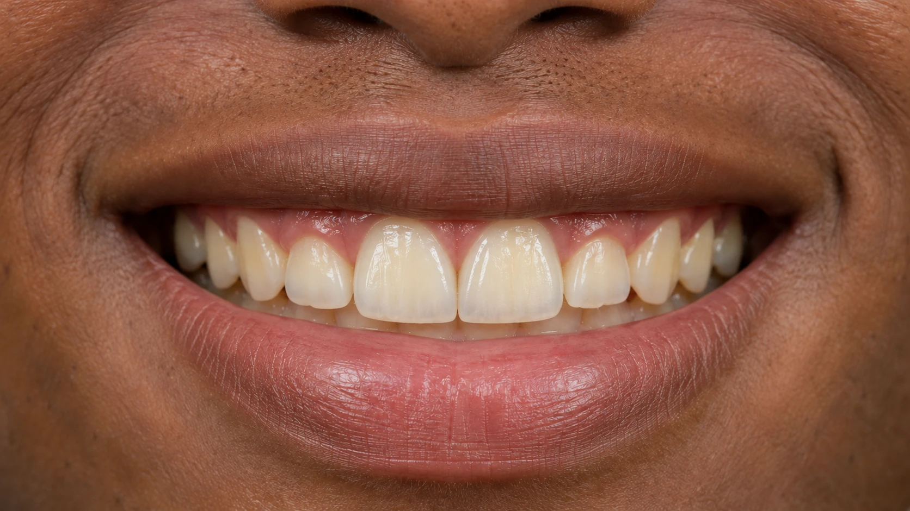

Mais procurado
Lentes de Contato Dental & Facetas
Lâminas de porcelana com 0,2 a 0,5 mm de espessura que corrigem cor, forma e alinhamento com mínimo ou nenhum desgaste. Resultado natural, desenhado para o seu rosto.
- Porcelana de alta translucidez
- Ensaio estético antes da cimentação
- Durabilidade de 15 a 20 anos com manutenção